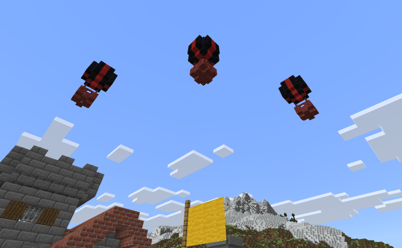

Getting Started in Jerry's Colonies
Jerry's Colonies is a multiplayer-oriented addon for Minecraft: Bedrock Edition that adds player-managed colonies to the game. The goal is to turn Minecraft into a civilization simulator where players can manage/build cities, create lore, and simulate diplomacy.
The First Step:
You are well on your way to growing a powerful civilization, but first you need to set up the basics. Craft a flag using 6 wool and a stick. This is what will create your colony.
Now you can place your flag! To do this, build a flag pole out of any vanilla fence and right click (mobile users: hold) to place the flag on the fence. If it doesn't work, your flag pole isn't tall enough, you are too far away, or you are not looking at the fence.
[WARNING] Many people struggle to place the flag and get an error saying they can't; if this happens to you you're likely just not tapping the right area on your screen — stand directly in front of the flagpole and try again.
After placing the flag you should be given a crown named after your colony. This crown is unique and cannot be replaced — take good care of it.
Read Next: The Mayor's Table
Mayor's Table
The Mayor's Table is the central workstation for your colony. Use a crafting table to make the Mayor's Table, the recipe is shown below.
The Mayor's Table has the following abilities
View Colony Info
— Sends a chat message containing info about your colony. Only you can see this.Change Flag Color
— Customize the flag color, and the color of your colonies display nameManage Members
— Invite players, Purchase Citizens, and Manage Population.Construction
— Browse and buy prebuilt structure blueprints.Diplomacy
— Set relationships with other colonies (ally/neutral/hostile), or declare war on your enemies.Rename / Delete Colony
— Change your colony's display name, or permanently delete a colony.Transfer Ownership
— Pass the crown to another player, transfers full ownership and administrative rights to them.Teleport Between Flags
— Fast-travel to any of your colony's flags (Only appears if your colony has multiple flags)

Read Next: Feeding Citizens
Feeding Citizens
It's important to learn how to feed your citizens before inviting citizens to your colony. Citizens need food to stay alive and productive. If a colony runs out of accessible food, citizens can become hungry and will eventually die.
Crafting / Setup
Craft a Food Crate by combining a chest with two bread and some planks at a crafting table — place the crate inside the colony territory so citizens can access it.
How it works
Citizens will automatically take one food item from any accessible Food Crate per in-game day. The crate must be within the colony's protected radius.
Read Next: Citizens
Citizens
Citizens are the heart of a colony. There are two kinds:
Players
— Invite other players through the Mayor's Table to join your colony.NPCs
— Hireable citizens purchased from the Mayor's Table. Cost shown in the Mayors Table (Default 5 Emeralds Each), and they can be equipped with armor by dropping it at their feet and assigned jobs.Feeding
Civilians require food to survive — see Feeding Citizens for more info. Check a citizens hunger by interacting with them.
Knights
Knights are a special citizen job. They are stronger, and can be ordered to follow and assist you in combat.

Benefits & Mechanics
- Colony Buffs: Every 10 citizens unlocks a status effect for colony members within colony territory (up to 50 citizens worth of effects).
- Jobs: Assign jobs (botanist, miner, hunter, etc.). Citizens occasionally give items related to their job; a yellow exclamation mark appears above them when they have items to collect.
- Population Limits: Server admins can set NPC caps via the moderation tool, and adjust the price; be mindful of performance and balance when hiring many NPCs.
Read Next: Plagues
War & Diplomacy
Diplomacy is how colonies manage their relationships with one another — set allies, neutrals, or hostiles and use the Mayor's Table relations menu to interact with other colonies.
Relations
Open the Relations menu at the Mayor's Table to view other colonies, set alliances, or mark another colony as hostile.
Declaring War
To declare war, use the diplomacy menu and choose Declare War against a hostile colony (Colony must have 5 or more citizens). When a war is declared the target colony receives a notification and a war timer starts.
Wars are timed and how long is chosen by the colony that declares. Score points in a war by eliminating opposing NPCs or player citizens. Victorious colonies may claim one of the other colonies flags (if they have more than one).
Read Next: Mod Tool
Blueprints & Construction
Blueprints let you instantly place complex structures so you can quickly expand your colony with nice buildings and layouts.
Purchase Menu
Open the Mayor's Table and browse the Construction menu to view available blueprints. Prices can be set by server admins.
Placing a Blueprint
Select a blueprint, position the preview outline in the world, and confirm to instantly build. You have a short preview window to cancel the placement. If you don't like where it is, you have one more chance to undo it
Example:
Here's a city I built using several different blueprints.
Read Next: War & Diplomacy
Marauder Attacks
Marauders are very dangerous event like plagues where hostile NPCs (Marauders) arrive by hot-air balloon and assault your colony — first from the air, then on the ground.
What are Marauders?
Marauders are hostile NPC raiders that spawn above colonies in small groups (commonly 3–5). They arrive in hot-air balloons and may target your colony for a raid that comes in multiple waves.
Waves
Waves typically happen in two phases:
- Wave 1 — Bombing: Marauders remain in their balloons and drop explosive bombs over the colony. Bombs damage entities but do not break blocks.

- Wave 2 — Ground Assault: After bombing, the marauders land and continue the attack on the ground, engaging players and NPC citizens directly.
Tips
- Keep citizens sheltered inside protected structures during raids to reduce civilian casualties.
- Equip knights and guards with good armor and weapons — they perform well defending against the ground wave.
- Use Iron Golems — They deal heavy damage to Marauders, but Marauders deal heavy damage back.
- Admins can change the frequency via the moderation tool if raids are too often / too little.
Read Next: Blueprints
Plagues
Plagues can infect a colony, applying Weakness III to citizens for 20 minutes. World admins can adjust how often plagues occur
Read Next: Marauders
Server Moderation
Each colony protects a a 100 block radius around each of its flags. Non-members cannot break blocks inside this area unless admins configure otherwise. Server admins use the Moderation Tool (an admin-only item) to manage colonies and tweak addon settings.
The Mod Tool Item
The mod tool is an item given to server admins that opens a powerful administration UI. Use it to quickly manage colonies, adjust global settings, and troubleshoot issues. To open the UI, right click or hold on any colony flag.
Admin Features
KTo use the mod tool, grab it from the creative menu, and then give yourself access via the command "/tag add [username] admin"
- Tweaking addon settings
- Setting prices for citizens/blueprints
- Triggering events
- Teleporting between colonies
- Setting citizen limits
- Force-Deleting Colonies
- More to come...
That's the essentials — use the Mayor's Table and flags to manage and grow your civilization, and join the Discord for suggestions or support.
404 — Page not found
This page does not exist. If you followed an external link that led here, try returning to the Get Started page.